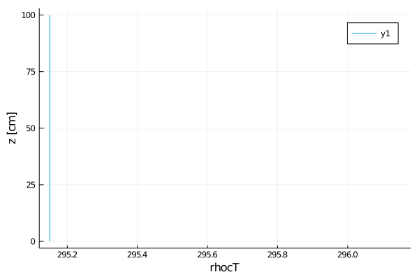
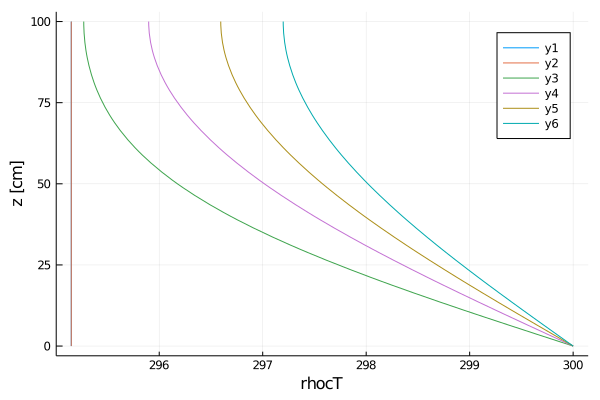

Heat equation tutorial
In this tutorial, we'll be solving the heat equation:
$\frac{∂ ρcT}{∂ t} + ∇ ⋅ (-α ∇ρcT) = 0$
where
tis timeαis the thermal diffusivityTis the temperatureρis the densitycis the heat capacityρcTis the thermal energy
To put this in the form of ClimateMachine's BalanceLaw, we'll re-write the equation as:
$\frac{∂ ρcT}{∂ t} + ∇ ⋅ (F(α, ρcT, t)) = 0$
where
- $F(α, ρcT, t) = -α ∇ρcT$ is the second-order flux
with boundary conditions
- Fixed temperature $T_{surface}$ at $z_{min}$ (non-zero Dirichlet)
- No thermal flux at $z_{min}$ (zero Neumann)
Solving these equations is broken down into the following steps:
- Preliminary configuration
- PDEs
- Space discretization
- Time discretization
- Solver hooks / callbacks
- Solve
- Post-processing
Preliminary configuration
Loading code
First, we'll load our pre-requisites:
- load external packages:
using MPI
using OrderedCollections
using Plots
using StaticArrays- load CLIMAParameters and set up to use it:
using CLIMAParameters
struct EarthParameterSet <: AbstractEarthParameterSet end
const param_set = EarthParameterSet()Main.ex-heat_equation.EarthParameterSet()- load necessary ClimateMachine modules:
using ClimateMachine
using ClimateMachine.Mesh.Topologies
using ClimateMachine.Mesh.Grids
using ClimateMachine.Writers
using ClimateMachine.DGmethods
using ClimateMachine.DGmethods.NumericalFluxes
using ClimateMachine.DGmethods: BalanceLaw, LocalGeometry
using ClimateMachine.MPIStateArrays
using ClimateMachine.GenericCallbacks
using ClimateMachine.ODESolvers
using ClimateMachine.VariableTemplates
using ClimateMachine.SingleStackUtils- import necessary ClimateMachine modules: (
importing enables us to
provide implementations of these structs/methods)
import ClimateMachine.DGmethods:
vars_state_auxiliary,
vars_state_conservative,
vars_state_gradient,
vars_state_gradient_flux,
source!,
flux_second_order!,
flux_first_order!,
compute_gradient_argument!,
compute_gradient_flux!,
update_auxiliary_state!,
nodal_update_auxiliary_state!,
init_state_auxiliary!,
init_state_conservative!,
boundary_state!Initialization
Define the float type (Float64 or Float32)
FT = Float64;Initialize ClimateMachine for CPU.
ClimateMachine.init(; disable_gpu = true);
const clima_dir = dirname(dirname(pathof(ClimateMachine)));Load some helper functions for plotting
include(joinpath(clima_dir, "docs", "plothelpers.jl"));Define the set of Partial Differential Equations (PDEs)
Define the model
Model parameters can be stored in the particular BalanceLaw, in this case, a HeatModel:
Base.@kwdef struct HeatModel{FT} <: BalanceLaw
"Parameters"
param_set::AbstractParameterSet = param_set
"Heat capacity"
ρc::FT = 1
"Thermal diffusivity"
α::FT = 0.01
"Initial conditions for temperature"
initialT::FT = 295.15
"Bottom boundary value for temperature (Dirichlet boundary conditions)"
T_bottom::FT = 300.0
"Top flux (α∇ρcT) at top boundary (Neumann boundary conditions)"
flux_top::FT = 0.0
endCreate an instance of the HeatModel:
m = HeatModel{FT}();This model dictates the flow control, using Dynamic Multiple Dispatch, for which kernels are executed.
Define the variables
All of the methods defined in this section were imported in # Loading code to let us provide implementations for our HeatModel as they will be used by the solver.
Specify auxiliary variables for HeatModel
vars_state_auxiliary(::HeatModel, FT) = @vars(z::FT, T::FT);Specify state variables, the variables solved for in the PDEs, for HeatModel
vars_state_conservative(::HeatModel, FT) = @vars(ρcT::FT);Specify state variables whose gradients are needed for HeatModel
vars_state_gradient(::HeatModel, FT) = @vars(ρcT::FT);Specify gradient variables for HeatModel
vars_state_gradient_flux(::HeatModel, FT) = @vars(α∇ρcT::SVector{3, FT});Define the compute kernels
Specify the initial values in aux::Vars, which are available in init_state_conservative!. Note that
- this method is only called at
t=0 aux.zandaux.Tare available here because we've specifiedzandT
in vars_state_auxiliary
function init_state_auxiliary!(m::HeatModel, aux::Vars, geom::LocalGeometry)
aux.z = geom.coord[3]
aux.T = m.initialT
end;Specify the initial values in state::Vars. Note that
- this method is only called at
t=0 state.ρcTis available here because we've specifiedρcTin
vars_state_conservative
function init_state_conservative!(
m::HeatModel,
state::Vars,
aux::Vars,
coords,
t::Real,
)
state.ρcT = m.ρc * aux.T
end;The remaining methods, defined in this section, are called at every time-step in the solver by the BalanceLaw framework.
Overload update_auxiliary_state! to call heat_eq_nodal_update_aux!, or any other auxiliary methods
function update_auxiliary_state!(
dg::DGModel,
m::HeatModel,
Q::MPIStateArray,
t::Real,
elems::UnitRange,
)
nodal_update_auxiliary_state!(heat_eq_nodal_update_aux!, dg, m, Q, t, elems)
return true # TODO: remove return true
end;Compute/update all auxiliary variables at each node. Note that
aux.Tis available here because we've specifiedTin
vars_state_auxiliary
function heat_eq_nodal_update_aux!(
m::HeatModel,
state::Vars,
aux::Vars,
t::Real,
)
aux.T = state.ρcT / m.ρc
end;Since we have second-order fluxes, we must tell ClimateMachine to compute the gradient of ρcT. Here, we specify how ρcT is computed. Note that
transform.ρcTis available here because we've specifiedρcTin
vars_state_gradient
function compute_gradient_argument!(
m::HeatModel,
transform::Vars,
state::Vars,
aux::Vars,
t::Real,
)
transform.ρcT = state.ρcT
end;Specify where in diffusive::Vars to store the computed gradient from compute_gradient_argument!. Note that:
diffusive.α∇ρcTis available here because we've specifiedα∇ρcTin
vars_state_gradient_flux
∇transform.ρcTis available here because we've specifiedρcTin
vars_state_gradient
function compute_gradient_flux!(
m::HeatModel,
diffusive::Vars,
∇transform::Grad,
state::Vars,
aux::Vars,
t::Real,
)
diffusive.α∇ρcT = -m.α * ∇transform.ρcT
end;We have no sources, nor non-diffusive fluxes.
function source!(m::HeatModel, _...) end;
function flux_first_order!(
m::HeatModel,
flux::Grad,
state::Vars,
aux::Vars,
t::Real,
) end;Compute diffusive flux ($F(α, ρcT, t) = -α ∇ρcT$ in the original PDE). Note that:
diffusive.α∇ρcTis available here because we've specifiedα∇ρcTin
vars_state_gradient_flux
function flux_second_order!(
m::HeatModel,
flux::Grad,
state::Vars,
diffusive::Vars,
hyperdiffusive::Vars,
aux::Vars,
t::Real,
)
flux.ρcT += diffusive.α∇ρcT
end;Boundary conditions
Second-order terms in our equations, $∇⋅(F)$ where $F = -α∇ρcT$, are internally reformulated to first-order unknowns. Boundary conditions must be specified for all unknowns, both first-order and second-order unknowns which have been reformulated.
The boundary conditions for ρcT (first order unknown)
function boundary_state!(
nf,
m::HeatModel,
state⁺::Vars,
aux⁺::Vars,
n⁻,
state⁻::Vars,
aux⁻::Vars,
bctype,
t,
_...,
)
if bctype == 1 # bottom
state⁺.ρcT = m.ρc * m.T_bottom
elseif bctype == 2 # top
nothing
end
end;The boundary conditions for ρcT are specified here for second-order unknowns
function boundary_state!(
nf,
m::HeatModel,
state⁺::Vars,
diff⁺::Vars,
aux⁺::Vars,
n⁻,
state⁻::Vars,
diff⁻::Vars,
aux⁻::Vars,
bctype,
t,
_...,
)
if bctype == 1 # bottom
state⁺.ρcT = m.ρc * m.T_bottom
elseif bctype == 2 # top
diff⁺.α∇ρcT = n⁻ * m.flux_top
end
end;Spatial discretization
Prescribe polynomial order of basis functions in finite elements
N_poly = 5;Specify the number of vertical elements
nelem_vert = 10;Specify the domain height
zmax = FT(1);Establish a ClimateMachine single stack configuration
driver_config = ClimateMachine.SingleStackConfiguration(
"HeatEquation",
N_poly,
nelem_vert,
zmax,
param_set,
m,
numerical_flux_first_order = CentralNumericalFluxFirstOrder(),
);┌ Info: Model composition
│ param_set = Main.ex-heat_equation.EarthParameterSet()
│ ρc = 1.0
│ α = 0.01
│ initialT = 295.15
│ T_bottom = 300.0
└ flux_top = 0.0
┌ Info: Establishing single stack configuration for HeatEquation
│ precision = Float64
│ polynomial order = 5
│ domain = 1.00 m x1.00 m x1.00 m
│ #vert elems = 10
│ MPI ranks = 1
│ min(Δ_horz) = 0.12 m
└ min(Δ_vert) = 0.01 mTime discretization
Specify simulation time (SI units)
t0 = FT(0)
timeend = FT(40)40.0We'll define the time-step based on the Fourier number
Δ = min_node_distance(driver_config.grid)
given_Fourier = FT(0.08);
Fourier_bound = given_Fourier * Δ^2 / m.α;
dt = Fourier_bound0.0011039800162777238Configure a ClimateMachine solver.
This initializes the state vector and allocates memory for the solution in space (dg has the model m, which describes the PDEs as well as the function used for initialization). This additionally initializes the ODE solver, by default an explicit Low-Storage Runge-Kutta method.
solver_config =
ClimateMachine.SolverConfiguration(t0, timeend, driver_config, ode_dt = dt);
grid = solver_config.dg.grid;
Q = solver_config.Q;
aux = solver_config.dg.state_auxiliary;[ Info: Initializing HeatEquationInspect the initial conditions
Let's export a plot of the initial state
output_dir = @__DIR__;
mkpath(output_dir);
z_scale = 100 # convert from meters to cm
z_key = "z"
z_label = "z [cm]"
z = get_z(grid, z_scale)
state_vars = SingleStackUtils.get_vars_from_nodal_stack(
grid,
Q,
vars_state_conservative(m, FT),
)
aux_vars = SingleStackUtils.get_vars_from_nodal_stack(
grid,
aux,
vars_state_auxiliary(m, FT),
)
all_vars = OrderedDict(state_vars..., aux_vars...);
export_plot_snapshot(
z,
all_vars,
("ρcT",),
joinpath(output_dir, "initial_condition.png"),
z_label,
);
It matches what we have in init_state_conservative!(m::HeatModel, ...), so let's continue.
Solver hooks / callbacks
Define the number of outputs from t0 to timeend
const n_outputs = 5;This equates to exports every ceil(Int, timeend/n_outputs) time-step:
const every_x_simulation_time = ceil(Int, timeend / n_outputs);Create a nested dictionary to store the solution:
all_data = Dict([k => Dict() for k in 0:n_outputs]...)
all_data[0] = all_vars # store initial condition at ``t=0``OrderedCollections.OrderedDict{String,Array{Float64,1}} with 3 entries:
"ρcT" => [295.15, 295.15, 295.15, 295.15, 295.15, 295.15, 295.15, 295.15, 295…
"z" => [0.0, 0.0117472, 0.0357384, 0.0642616, 0.0882528, 0.1, 0.1, 0.111747…
"T" => [295.15, 295.15, 295.15, 295.15, 295.15, 295.15, 295.15, 295.15, 295…The ClimateMachine's time-steppers provide hooks, or callbacks, which allow users to inject code to be executed at specified intervals. In this callback, the state and aux variables are collected, combined into a single OrderedDict and written to a NetCDF file (for each output step step).
step = [1];
callback = GenericCallbacks.EveryXSimulationTime(
every_x_simulation_time,
solver_config.solver,
) do (init = false)
state_vars = SingleStackUtils.get_vars_from_nodal_stack(
grid,
Q,
vars_state_conservative(m, FT),
)
aux_vars = SingleStackUtils.get_vars_from_nodal_stack(
grid,
aux,
vars_state_auxiliary(m, FT);
exclude = [z_key],
)
all_vars = OrderedDict(state_vars..., aux_vars...)
all_data[step[1]] = all_vars
step[1] += 1
nothing
end;Solve
This is the main ClimateMachine solver invocation. While users do not have access to the time-stepping loop, code may be injected via user_callbacks, which is a Tuple of GenericCallbacks.
ClimateMachine.invoke!(solver_config; user_callbacks = (callback,));┌ Info: Starting HeatEquation
│ dt = 1.10397e-03
│ timeend = 40.00
│ number of steps = 36233
└ norm(Q) = 2.9515000000000049e+02
┌ Info: Update
│ simtime = 38.09 / 40.00
│ runtime = 00:01:00
└ norm(Q) = 2.9846508625150773e+02
┌ Info: Finished
│ norm(Q) = 2.9853560712934313e+02
│ norm(Q) / norm(Q₀) = 1.0114708017257077e+00
└ norm(Q) - norm(Q₀) = 3.3856071293426453e+00Post-processing
Our solution is stored in the nested dictionary all_data whose keys are the output interval. The next level keys are the variable names, and the values are the values along the grid:
To get T at $t=0$, we can use T_at_t_0 = all_data[0]["T"][:]
@show keys(all_data[0])Base.KeySet for a Dict{Any,Any} with 3 entries. Keys:
"T"
"z"
"ρcT"Let's plot the solution:
export_plot(
z,
all_data,
("ρcT",),
joinpath(output_dir, "solution_vs_time.png"),
z_label,
);
The results look as we would expect: a fixed temperature at the bottom is resulting in heat flux that propagates up the domain. To run this file, and inspect the solution in all_data, include this tutorial in the Julia REPL with:
include(joinpath("tutorials", "Land", "Heat", "heat_equation.jl"))This page was generated using Literate.jl.